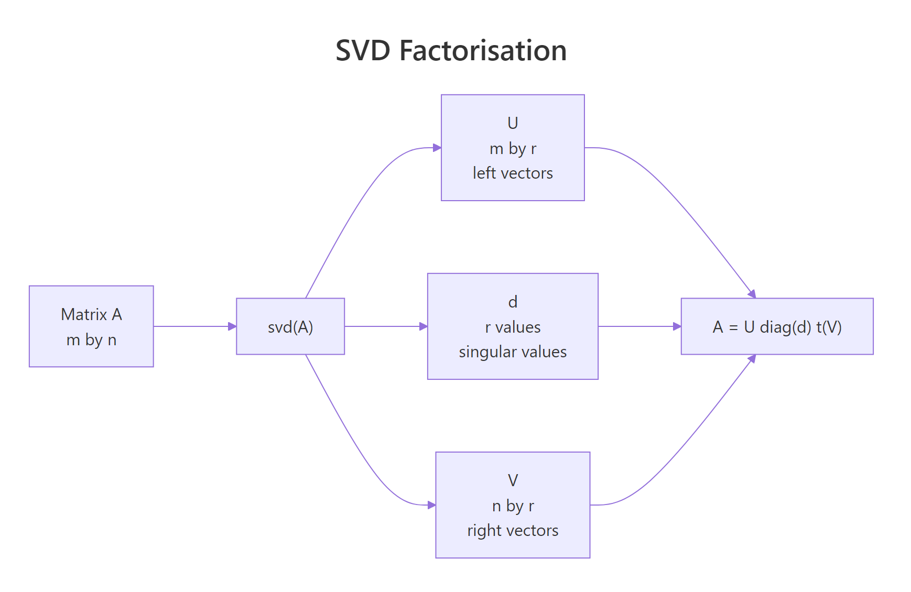
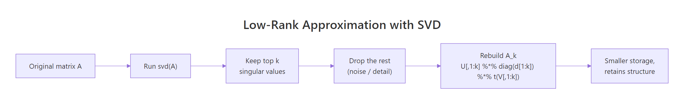
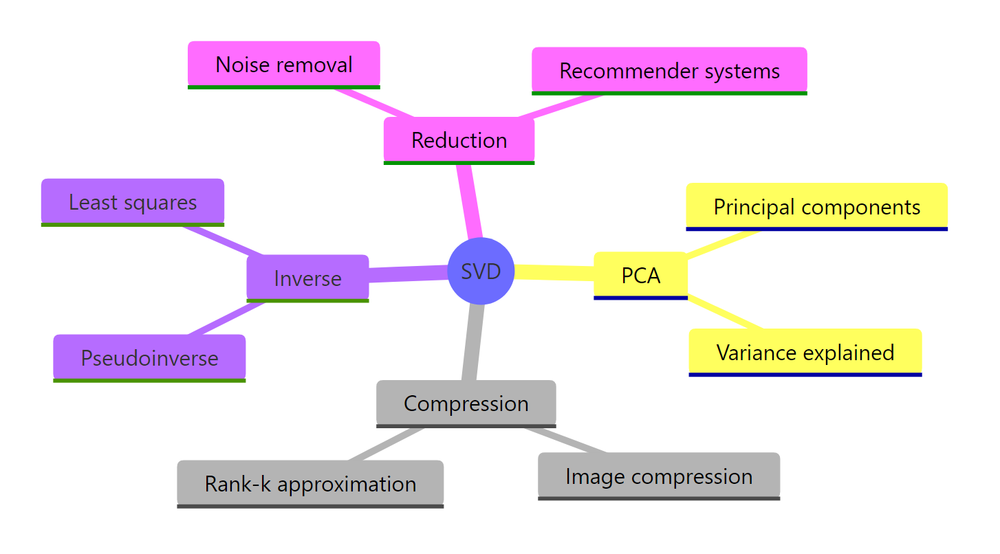

Singular Value Decomposition in R: svd(), The Most Useful Matrix Operation
Singular value decomposition (SVD) factors any matrix A into three pieces, A = U D V', that expose its rank, geometry, and dominant patterns. R's base svd() does the heavy lifting in one call, and the result powers PCA, low-rank approximation, and image compression.
What does svd() return when you decompose a matrix?
The fastest way to build intuition is to run svd() on a small matrix and look at what comes back. Three pieces: a vector of singular values, and two matrices of singular vectors. Together they hold everything A had, just rearranged so the most important structure sits first.
The vector s$d holds three singular values in descending order. s$u is 4×3, matching the four rows of A, and s$v is 3×3, matching its three columns. The largest singular value (3.46) is the energy of the dominant pattern; the smallest (0.82) is the weakest one. The reduced form svd() returns has only min(nrow, ncol) columns in u and v, which is exactly what you need to reconstruct A.

Figure 1: The svd() function returns three pieces that multiply back to A.
$. The result of svd() is a list, so s$d, s$u, and s$v give you the singular values, left vectors, and right vectors. You'll use those names in every block that follows.Try it: Build the 3×2 matrix B <- matrix(c(1, 2, 3, 4, 5, 6), nrow = 3) and print only its singular values.
Click to reveal solution
Explanation: svd() on a 3×2 matrix returns min(3, 2) = 2 singular values. $d extracts that vector directly.
How do you reconstruct the original matrix from U, D, V?
The decomposition is exact, so multiplying the three pieces back together recovers A to machine precision. Writing the formula in R takes one line: place diag(s$d) between s$u and the transpose of s$v.
$$A = U\,\mathrm{diag}(d)\,V^{\top}$$
Where:
- $U$ is the matrix of left singular vectors (its columns are orthonormal)
- $\mathrm{diag}(d)$ is the diagonal matrix of singular values
- $V^{\top}$ is the transpose of the right singular vectors
A_rec matches A to the last decimal. all.equal() confirms equality up to floating-point tolerance, which is the right check after any matrix arithmetic. If you ever see a mismatch, suspect a transposed factor or a missing diag() wrapper around s$d.
The columns of U and V are also orthonormal, meaning they have unit length and are mutually perpendicular. That property is the engine behind SVD's stability: there is no scale or skew hiding inside the rotations.
Both products are 3×3 identity matrices. U^T U = I and V^T V = I are the formal statement of orthonormality, and they make U and V rotations rather than general transformations. Rotations preserve length, which is why the singular values in d carry all the scaling information.
m × n matrix, which is why it shows up everywhere from PCA to least squares.Try it: Generate a 5×4 matrix ex_R <- matrix(rnorm(20), 5, 4) (set set.seed(7) first), decompose it with svd(), and verify the reconstruction matches with all.equal().
Click to reveal solution
Explanation: The reconstruction formula is identical for any shape. With 5 rows and 4 columns, s$u is 5×4 and s$v is 4×4, so diag(s$d) is 4×4 and the product comes out 5×4 again.
How does SVD give you a low-rank approximation?
In real data the smaller singular values often capture noise, not signal. If you keep only the top k of them and zero out the rest, you get the best rank-k approximation of A measured by Frobenius norm, a result called the Eckart-Young theorem. In plain language: SVD ranks structure by importance, and truncation throws away the least important parts first.
The two largest singular values dominate the next two by more than ten-fold, which tells you the data really sits in a 2D subspace plus a sprinkle of noise. That gap is your cue to truncate at k = 2.
The maximum absolute difference is about 0.13, which is roughly the noise level we baked in. The rank-2 approximation has captured the signal and dropped the noise. If we kept all four singular values, we would get the noise back, that is not what we want.
Component 1 explains 79% of the matrix's energy and component 2 another 21%, so together they account for 99.95%. The last two components contribute less than 0.1% each, which is the quantitative version of "those are noise." This same d^2 / sum(d^2) table is how PCA reports variance explained, and you'll see it again two sections from now.

Figure 2: Truncating the SVD to the top k singular values yields the best rank-k approximation.
d^2 for a scree plot. A bar plot or line plot of the squared singular values is the SVD analogue of PCA's scree plot. The "elbow" tells you where the signal stops and the noise begins.Try it: Build a 5×3 matrix ex_M <- matrix(c(1, 2, 3, 2, 4, 6, 3, 6, 9, 4, 8, 12, 5, 10, 15), nrow = 5, byrow = TRUE) (every row is a multiple of c(1, 2, 3), so it has rank 1). Compute its rank-1 approximation and report the maximum absolute error.
Click to reveal solution
Explanation: The matrix is exactly rank 1, so a rank-1 approximation reconstructs it perfectly. The tiny error is just floating-point round-off. Use drop = FALSE to keep s$u[, 1] as a column matrix instead of a vector.
How does SVD power PCA?
Principal component analysis is SVD applied to a centred data matrix. The right singular vectors V become the principal component loadings, and d^2 / (n - 1) becomes the variance of each component. R's prcomp() is implemented this way under the hood.
The variances match exactly across the two methods, confirming that PCA is an SVD of the centred data. Most of the variance lives in the first component because mtcars has columns on very different scales, a sign you usually want scale = TRUE for real PCA work, but here we keep it off so the equivalence is clear.
The manually computed scores Xc %*% V agree with prcomp()$x row by row. That equivalence is the reason the SVD route is taught in textbooks: once you understand svd(), PCA stops being a separate algorithm and becomes a one-line follow-on.
prcomp() calls svd() internally. If you read the source of prcomp in base R, you will see a call to La.svd() (a thin wrapper around svd()). So PCA in R is SVD with extra accounting around centering and scaling.Try it: Run SVD-based PCA on the four numeric columns of iris and print the variances of the first two components.
Click to reveal solution
Explanation: Centre, decompose, square the singular values, divide by n - 1. That is the entire PCA recipe.
How do you use SVD for image compression?
A grayscale image is a matrix of pixel intensities, and matrices have SVDs. If you keep only the top k singular values, you get a recognisable copy of the image while storing far fewer numbers. R ships with the volcano matrix (87×61 pixels of New Zealand topography), which makes a perfect test bed.
The first singular value (14,893) dwarfs the rest by orders of magnitude, which means a single rank-1 layer already carries most of the picture. The next few add fine ridges and contours; everything past rank 20 is essentially noise.
At k = 5 you are storing 14% of the original numbers and the volcano shape is already clear. By k = 20 it is hard to spot the difference from the full image, while still holding only 56% of the storage. Past k = 50 you are storing more numbers than the original matrix, which is why low-rank compression only pays off when the data is actually low-rank.
m × n matrix the break-even is roughly k = m * n / (m + n + 1). Above that, the compressed form takes more bytes than the original. Check the image's singular value plot before picking k.Try it: Reconstruct volcano at rank 10 and compute the Frobenius error sqrt(sum((volcano - approx)^2)).
Click to reveal solution
Explanation: The reconstruction error is about 113 versus a total signal energy near 14,898, so you are within 0.8% of the original after keeping just 10 of 61 components.
How does SVD give the pseudoinverse for least squares?
Most real-world systems have more equations than unknowns, so solve() fails. The Moore-Penrose pseudoinverse, written A+, gives the least-squares solution in those cases. SVD computes it in one expression by inverting the non-zero singular values.
$$A^{+} = V\,\mathrm{diag}(1/d)\,U^{\top}$$
Where each $1/d_i$ is the reciprocal of a non-zero singular value (zeros stay zero, which is what makes the formula safe for rank-deficient matrices).
The SVD and QR routes return identical estimates, both within 1.5% of the true coefficients despite the noise. The pseudoinverse approach is the same machinery lm() falls back on when designs become rank-deficient, except here you control every step.
solve() and qr.solve() both throw on a singular matrix, but svd() returns small or zero singular values and lets you decide what to do. Drop the tiny ones (set 1/d to zero where d is below a tolerance) and you get a truncated pseudoinverse that handles near-singular cases gracefully.Try it: Solve a 4×2 overdetermined system. Use set.seed(99); ex_A <- matrix(rnorm(8), 4, 2); ex_b <- c(1, 2, 3, 4). Find x_hat via SVD and report the residual norm sqrt(sum((ex_A %*% x_hat - ex_b)^2)).
Click to reveal solution
Explanation: With four equations and two unknowns, no exact solution exists. The pseudoinverse picks the x that minimises the residual norm, which is exactly what lm() does for regression coefficients.
Practice Exercises
Exercise 1: Compress a 200x200 matrix to rank 10
Generate a 200×200 matrix my_M whose entries are rnorm() plus a strong rank-2 signal. Compress it to rank 10, report the storage ratio (10 * (200 + 200 + 1) divided by 200 * 200), and report the maximum absolute reconstruction error.
Click to reveal solution
Explanation: Storage drops to about 10% of the original at rank 10. The error is on the order of the noise we baked in, which is the best any rank-10 approximation can do for this data.
Exercise 2: Re-implement PCA from scratch using only svd()
Take USArrests, centre and scale it, decompose with svd(), and produce two outputs: a vector of variances explained per component, and a 4×4 loadings matrix. Verify both against prcomp(USArrests, scale. = TRUE).
Click to reveal solution
Explanation: Variances match exactly. Loadings match in absolute value: signs of singular vectors are arbitrary, so different SVD implementations may return columns flipped, but the directions are the same.
Complete Example
Here's a full SVD analysis pipeline applied to the USArrests dataset, end to end.
PC1 (62% of the variance) loads negatively on the three crime columns, so it tracks overall crime rate. PC2 (25%) loads strongly negative on UrbanPop, separating urban from rural states. Together those two components hold 87% of the original variation, keeping just two columns of the loadings tells you most of what the data has to say. The rank-2 approximation has a relative Frobenius error around 36%, which is the cost of throwing away PC3 and PC4.
Summary
| Concept | Formula | R command |
|---|---|---|
| Decomposition | A = U D V' |
s <- svd(A) |
| Reconstruction | A = U diag(d) V' |
s$u %*% diag(s$d) %*% t(s$v) |
| Rank-k approximation | A_k = U_k diag(d_k) V_k' |
s$u[, 1:k] %*% diag(s$d[1:k]) %*% t(s$v[, 1:k]) |
| Variance explained | d_i^2 / sum(d^2) |
s$d^2 / sum(s$d^2) |
| PCA variances | d^2 / (n - 1) |
s$d^2 / (nrow(X) - 1) |
| Pseudoinverse | V diag(1/d) U' |
s$v %*% diag(1 / s$d) %*% t(s$u) |

Figure 3: SVD underpins many techniques across statistics and machine learning.
The single function svd() unlocks five distinct workflows: factoring matrices, ranking structure, compressing data, doing PCA, and solving rank-deficient systems. Once the three-piece mental model (U, d, V) lives in your head, every one of those tasks becomes a one-liner.
References
- R Core Team. svd(), Singular Value Decomposition of a Matrix. R documentation. Link
- Wikipedia. Singular value decomposition. Link
- Strang, G. Introduction to Linear Algebra, 6th edition. Wellesley-Cambridge Press (2023). Chapter 7: The Singular Value Decomposition. Link
- Eckart, C. and Young, G. The approximation of one matrix by another of lower rank. Psychometrika, 1(3): 211-218 (1936).
- Trefethen, L. N. and Bau, D. Numerical Linear Algebra. SIAM (1997). Lectures 4-5.
- UCLA Office of Advanced Research Computing. Examples of Singular Value Decomposition in R. Link
- Displayr. Singular Value Decomposition (SVD) Tutorial Using Examples in R. Link
Continue Learning
- Eigenvalues and Eigenvectors in R, the eigendecomposition cousin of SVD, and why every symmetric matrix's SVD reduces to its eigen problem.
- Matrix Operations in R, the multiplication, transpose, and inverse plumbing that SVD builds on.
- PCA in R, see SVD's most famous downstream application worked out with
prcomp()from a statistics-first angle.